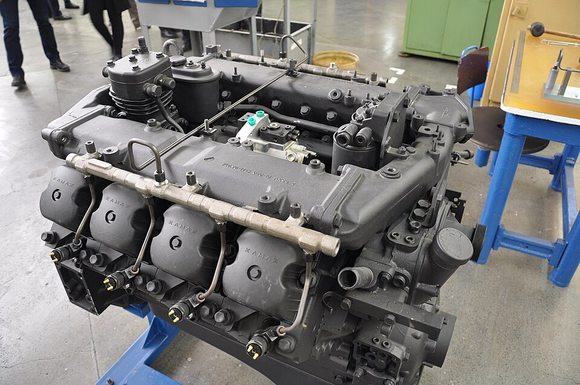

Двигуни КамАЗ: ремонт та обслуговування.
Повне маркування й опис завдання допоможуть визначити наступний крок.
Підготувати зверненняЯк визначити виконання
КамАЗ у цьому переліку означає техніку або виробника, а не один конкретний двигун.
Знайдіть індекс двигуна та назву модифікації автомобіля: саме вони потрібні для підбору деталей.
Що підготувати для звернення
Маркування двигуна, назву техніки або установки, короткий опис несправності, фото таблички та історію попереднього ремонту, якщо вони є.
Вартість, строк, випробування та доступність деталей узгоджуються після уточнення конкретного завдання.
Підбір ущільненьПідготуйте запит.
Для деталі вкажіть вузол, кількість та артикул або фото, якщо вони відомі.
Підготувати зверненняЯк обговорити ремонт КамАЗ
Повідомте точне маркування, назву техніки та що саме турбує. За можливості підготуйте фото таблички, відомості про напрацювання й попередні ремонти. Це допоможе визначити наступні кроки для вашого агрегату.
За описом підприємства, ремонт може включати розбирання, очищення, вимірювання деталей, відновлення або заміну несправних компонентів і складання. Склад робіт погоджується після оцінювання двигуна.
Деталі та умови
Для підбору прокладки, гумового кільця чи ремкомплекту потрібні модель і модифікація, вузол та, за наявності, артикул або фото. Сумісність і наявність перевіряються окремо.
Вартість і строк залежать від стану двигуна та потрібних деталей. Умови діагностики, випробувань і гарантії узгоджуються для конкретного замовлення.
Як проходить ремонт ↗